17日目～Crazy City“パダン”～
パダンでは2泊するつもりだったが、観光名所はあまりないらしい。まずこの日は金が底を尽きかけていたKENの両替をし、そのあとはビーチで泳ごうと計画していた。
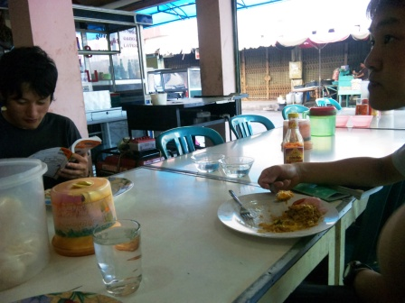
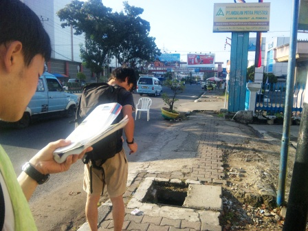
朝食後、銀行はないかと市の中心部へ歩き出す。きれいなブキティンギとは全く雰囲気を異にしていた。歩道は荒れていてドブに落ちてしまいそうな穴も目立った。
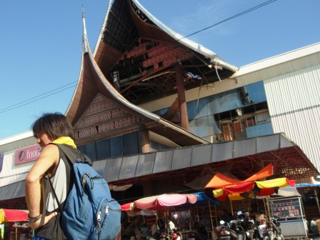
市の中心部にあるマタハリデパートは崩れていて、周囲には多数の屋台が出ているものの営業している気配はなかった。後に昨年9月の地震によるものだと知った。デパートの周りには多くの銀行があるはずなのに、それほど多くはなかった。しかも土曜日だからか営業していない…。
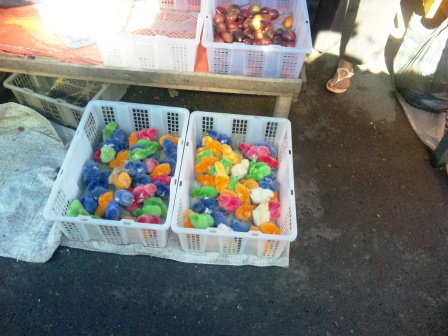
デパート付近には市場があり、ここではピヨピヨとかわいいカラフルなヒヨコが売られていた。目立たせるためだけに色づけされてしまったかわいそうなヒヨコたち。
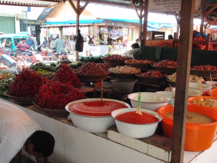
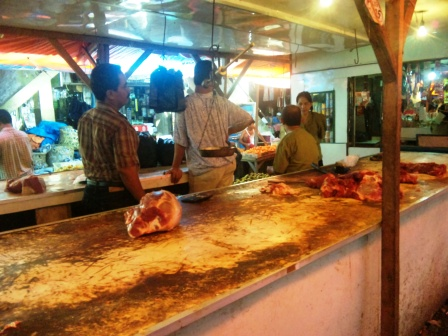
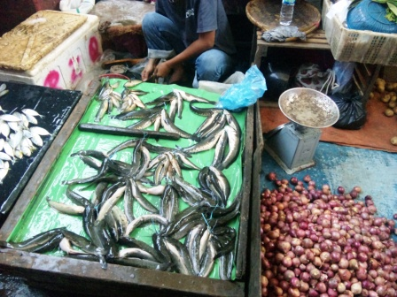
この市場の肉魚コーナーは恐るべき不衛生さを誇っていた。洗っているのかが疑問な机の上で巨大な肉塊をぶった切っては、無数のハエが群がるのもお構いなしに売っていた。悪臭が立ち込め、地面にはヘドロのようなどす黒い水たまりができていた。
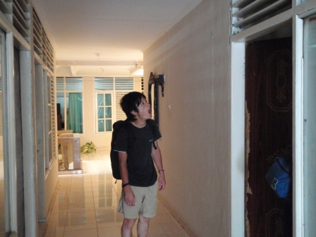
地獄のような暑さでバテてきたのでいったん宿に戻って小休止。
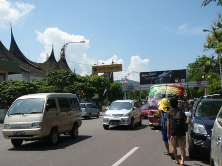
再び銀行探しに繰り出したが、どうもやっているところはないようなので両替は断念。
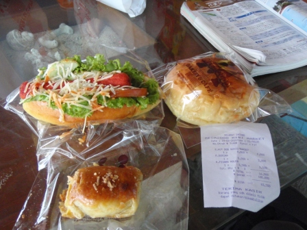
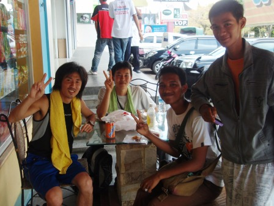
ベーカリーショップで昼食をとっていると、パダン日本語学院の学生さんがカタコトの日本語で話しかけてきてくれた。
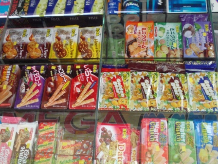
ベーカリーショップはコンビニにようなところで、お菓子もたくさん売られていた。やたら日本語の表記が目立った。
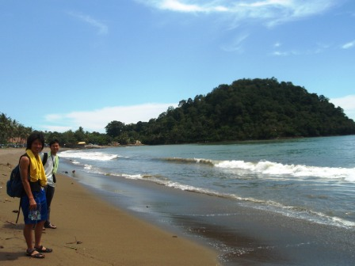
パダンのビーチに出てみたが、少し臭った。
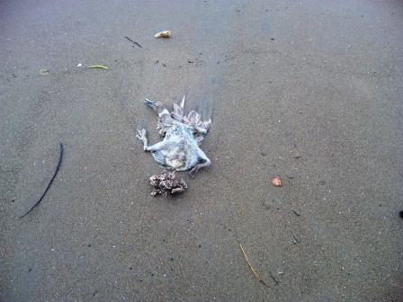
おまけに、こんなものが波打ち際に横たわっていたら泳ぐ気は失せてしまう。
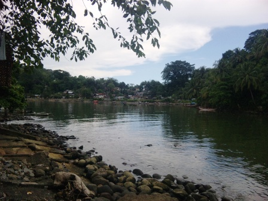
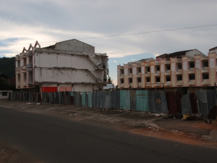
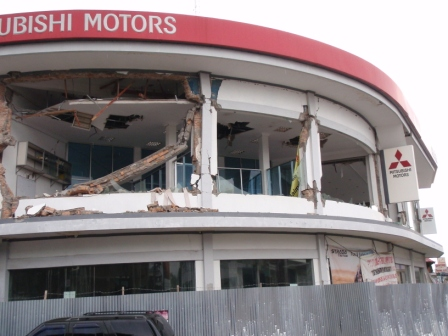
海岸で日向ぼっこをしてから海岸沿いを歩き、旧市街地区へ向かった。川の水は汚染されており、この水が海に流れ込んでいると思うとやはり泳がなくて正解だと思ってしまう。旧市街市区はすっかりすたれてしまっていて、半壊の建物が目立った。あるはずのチャイナタウンもどこへいってしまったのやら。
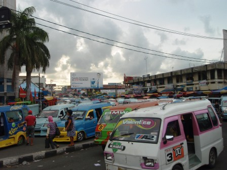
町の中心部は、驚くほどの数の乗り合いタクシーで埋め尽くされていた。クラクションの音がけたたましい。おまけに、車内では大音量で音楽を流している。運転手はたいてい若い兄ちゃんだ。なぜこの町の乗り合いタクシーはこんなことになってしまったのだろうか。ちなみに、この町ではベモではなくアンコタというそうだ。あまり好きにはなれなかった。
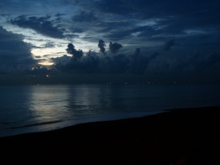
夕暮れのビーチ。
このページの記載には所々不適切な箇所があったため、追記させていただく。
2009年9月30日。パダン沖で地震が発生し、パダン市でも1000名を超える方々の人命が失われた。僕たちが見てきた半壊の建物、そしてデパートの近隣に立ち並ぶ市場、それらはすべて地震による爪痕を物語っていたのだ。タイトルではこれらをCrazyと表現してしまった。それは間違いではないと思っているが、復興に向けた人々の活気が織りなしたものだということは、ここで述べておかなければならない。
復興に向けて動き出した街中で出会った子供たちはみな笑顔を絶やさなかった。資源、人口がともに豊かなこの国の将来は明るく、また親日的な彼らは僕たち日本人にとって、将来もしかすると中国以上に強固な関係を築くべきパートナーなのかもしれない。
翌日へ